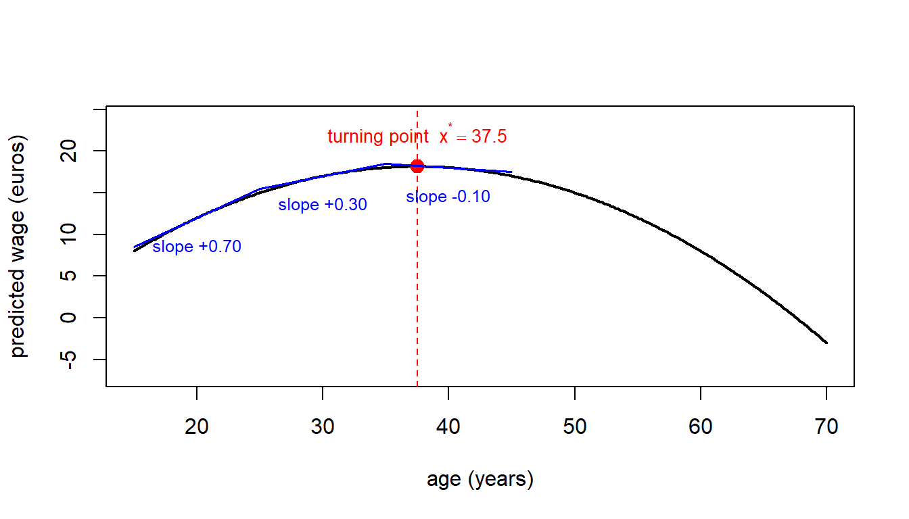
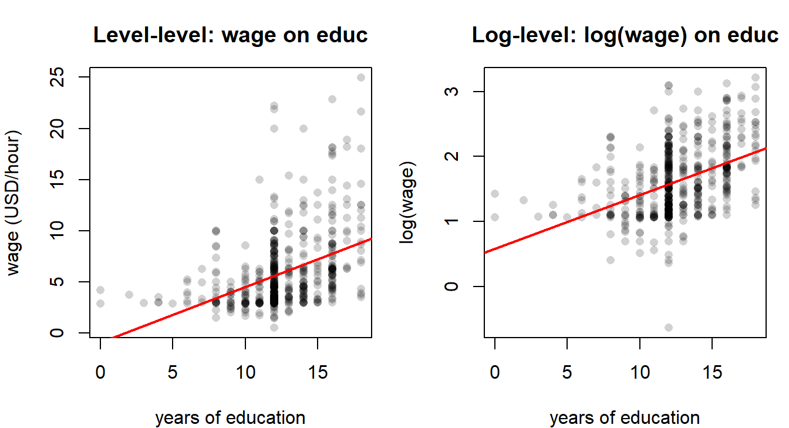
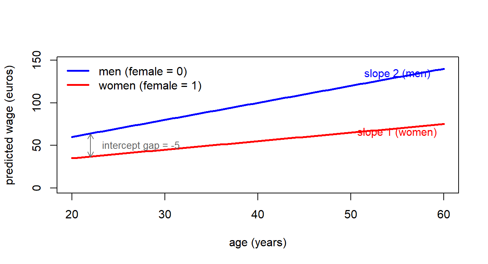

6 Nonlinear Relationships and Qualitative Information
Learning outcomes
By the end of this chapter the reader should be able to:
- Recognise when a linear-in-parameters model can accommodate a nonlinear relationship in the variables, and choose between quadratic and logarithmic specifications.
- Compute partial effects and turning points in quadratic models, and decide whether a turning point is economically meaningful.
- Interpret coefficients in level–level, log–level, level–log, and log–log models in terms of slopes, semi-elasticities, and elasticities.
- Build and interpret interaction terms, including interactions between two continuous variables and between a continuous variable and a dummy (slope dummies).
- Use dummy variables for binary, nominal, and ordinal qualitative information, and avoid the dummy variable trap.
- Test for a structural break across two subsamples using the Chow \(F\)-test, computed both by hand and via
anova().
Motivating empirical question
Does an additional year of experience always increase wages by the same amount? And is the return to experience — or to looks — the same for women as it is for men?
A linear regression of wages on experience implicitly assumes that the tenth year of experience pays exactly the same as the first. Common sense and decades of labour-economics evidence both suggest otherwise: the wage–experience profile is concave. Likewise, a single coefficient on female captures an average gap in intercepts but says nothing about whether the return to experience differs by gender. The tools in this chapter — quadratics, logs, interactions, dummies, and the Chow test — let us answer questions of this form without abandoning OLS.
6.1 Nonlinear relationships in a linear model
economic relationships are not straight lines. Diminishing returns to experience, inverted-U Kuznets curves, U-shaped average cost curves, and constant-elasticity demand curves all violate strict linearity in the variables. Fortunately the workhorse model of this course requires linearity only in the parameters. A specification such as \[ y = \beta_0 + \beta_1 x + \beta_2 x^2 + u \] is nonlinear in \(x\) but linear in \(\beta_0, \beta_1, \beta_2\), so it can be estimated by OLS exactly like the multiple regression of Chapter 3, just with \(x^2\) entered as an additional regressor. The same is true of \(\ln(y)\), \(\ln(x)\), \(x_1 \cdot x_2\), \(1/x\), and any other transformation of the variables that you can compute before running the regression.
Two practical takeaways follow.
- Specification is a modelling choice. Theory, prior empirical work, and a scatter plot of the data should guide whether to use a quadratic, a log, an interaction, or some combination.
- Interpretation changes. Once you transform variables, the coefficients no longer have the simple “one-unit increase in \(x\)” reading. The bulk of this chapter is about getting those interpretations right.
NoteDefinition: linear in parameters
A regression model is linear in parameters if it can be written as \(y = \beta_0 + \beta_1 g_1(\mathbf{x}) + \cdots + \beta_k g_k(\mathbf{x}) + u\), where \(g_1,\dots,g_k\) are known functions of the regressors. The functions \(g_j\) may be highly nonlinear (squares, logs, interactions, ratios), but each enters multiplied by a single unknown coefficient. OLS estimation, the Gauss–Markov theorem, and the inference machinery of Chapters 3–5 all apply.
6.2 Quadratic models
Wages rise quickly in the first years of a career but level off — and may even fall — as workers approach retirement. To let our model bend, add the square of experience as a second regressor: \[ y = \beta_0 + \beta_1 x + \beta_2 x^2 + u. \] Now the partial effect of \(x\) on \(y\) is no longer constant: \[ \frac{\partial y}{\partial x} = \beta_1 + 2\beta_2 x. \] The marginal effect depends on where on the \(x\)-axis we evaluate it. The signs of \(\beta_1\) and \(\beta_2\) determine the shape of the relationship:
- \(\beta_1 > 0,\ \beta_2 < 0\): increasing then decreasing — an inverted U with a maximum at \(x^* = -\beta_1/(2\beta_2)\).
- \(\beta_1 < 0,\ \beta_2 > 0\): decreasing then increasing — a U-shape with a minimum at \(x^*\).
- \(\beta_1 > 0,\ \beta_2 > 0\): increasing at an increasing rate (convex and upward-sloping).
- \(\beta_1 < 0,\ \beta_2 < 0\): decreasing at an increasing rate.
Setting the partial effect to zero and solving gives the turning point \[ x^* \;=\; -\,\frac{\beta_1}{2\beta_2}. \] Whether \(x^*\) is a maximum or a minimum is read off the sign of \(\beta_2\) (negative for a maximum, positive for a minimum).
NoteExample: wage and age
A study estimates \[ \widehat{\text{wage}} = -10 + 1.5\,\text{age} - 0.02\,\text{age}^2. \] The marginal effect of age is \(1.5 - 0.04\,\text{age}\).
- At age 20: \(1.5 - 0.04(20) = 0.7\) euros per year of age.
- At age 30: \(1.5 - 0.04(30) = 0.3\) euros per year.
- At age 40: \(1.5 - 0.04(40) = -0.1\) euros per year.
The turning point is \(\text{age}^* = 1.5 / (2 \cdot 0.02) = 37.5\) years. Before 37.5, an extra year of age raises predicted wages; after 37.5, it lowers them.
WarningCommon mistake: reporting a turning point outside the data
The formula \(x^* = -\beta_1/(2\beta_2)\) always exists, but the turning point is only economically meaningful if it lies inside the range of \(x\) observed in the sample. If \(x^*\) is, say, 75 years of experience and nobody in the sample has more than 50, the “turning point” is an extrapolation and should not be sold as evidence of decreasing returns at experienced workers — the data simply do not cover that region.
In R, the squared term is included with I(exper^2). The wrapper I() (for “as is”) protects the ^ operator from being parsed by R’s formula language as the symbol for crossed effects.
6.3 Logarithmic transformations
Taking the natural logarithm of one or both sides of the regression equation changes how the coefficient is interpreted. The four cases in common use are summarised below, with \(\beta_1\) denoting the slope on the (possibly transformed) regressor.
| Model | Dependent | Independent | Interpretation of \(\beta_1\) |
|---|---|---|---|
| Level–level | \(y\) | \(x\) | One-unit \(\uparrow\) in \(x\) \(\Rightarrow\) \(\Delta y \approx \beta_1\) units |
| Log–level | \(\ln(y)\) | \(x\) | One-unit \(\uparrow\) in \(x\) \(\Rightarrow\) \(y\) changes by \(\approx 100\,\beta_1\%\) (semi-elasticity) |
| Level–log | \(y\) | \(\ln(x)\) | 1% \(\uparrow\) in \(x\) \(\Rightarrow\) \(\Delta y \approx \beta_1/100\) units |
| Log–log | \(\ln(y)\) | \(\ln(x)\) | 1% \(\uparrow\) in \(x\) \(\Rightarrow\) \(y\) changes by \(\approx \beta_1\)% (elasticity) |
Three practical reasons to log a strictly positive variable like wage or income are: to reduce right-skew, to stabilise variance (a partial remedy for some kinds of heteroskedasticity, see Chapter 7), and to give coefficients a percentage reading. The log–log specification is especially common when economic theory delivers a constant-elasticity prediction (e.g. Cobb–Douglas production functions, isoelastic demand curves).

NoteExample: log–level wage equation
If the estimated equation is \[ \widehat{\ln(\text{wage})} = 1.5 + 0.02\,\text{age}, \] then an additional year of age is associated with approximately a \(0.02 \times 100 = 2\%\) increase in the wage, holding everything else fixed. The approximation \(\%\Delta y \approx 100\,\beta_1\) is accurate for small \(\beta_1\); for large coefficients the exact percentage change is \(100\,(e^{\beta_1} - 1)\).
WarningCommon mistake: logging zeros or negatives
The natural log is undefined at zero and negative numbers. Before logging a variable, check that all observations are strictly positive. For variables that are zero for many units (e.g. hours worked, donations, exports), \(\ln\) is not an option without further care — alternatives include \(\ln(1 + x)\), the inverse hyperbolic sine, or a two-part model. We stick to strictly positive variables in this chapter.
6.4 Interaction terms
Does an extra year of schooling pay off the same for men and for women? If we suspect not, we cannot capture that with separate dummies — we need a variable that lets the slope on education itself change with gender. That variable is an interaction term: a regressor that lets the partial effect of one variable depend on another. With two continuous regressors \(x_1\) and \(x_2\), \[ y = \beta_0 + \beta_1 x_1 + \beta_2 x_2 + \beta_3 (x_1 \cdot x_2) + u, \] the partial effect of \(x_1\) on \(y\) is \[ \frac{\partial y}{\partial x_1} = \beta_1 + \beta_3\,x_2. \] It now depends on the level of \(x_2\). Symmetrically, the partial effect of \(x_2\) depends on \(x_1\). The coefficient \(\beta_3\) on the product term tells us how the slope of \(x_1\) changes when \(x_2\) moves by one unit (and vice versa).
The same idea applies when one of the two variables is a dummy (Section 6.5.2) and when both are dummies. A significant interaction means that the effect of one variable on \(y\) is heterogeneous in the other — a property that matters enormously for policy: a treatment with a positive average effect can still hurt particular subgroups if the interaction is large enough in the wrong direction.
WarningCommon mistake: dropping the main effects when including an interaction
A model that contains \(x_1 \cdot x_2\) but omits \(x_1\) and/or \(x_2\) on their own forces the partial effect of the omitted main effect through zero. Unless you have a very strong theoretical reason to do so, always include the main effects whenever you include their interaction. In R, the syntax x1*x2 automatically expands to x1 + x2 + x1:x2, which prevents this mistake.
WarningCommon mistake: a significant interaction is not heterogeneous causation
A significant \(\hat\beta_3\) tells you the conditional mean of \(y\) shifts heterogeneously with the two regressors — this is a statement about description, not about causation. It does not by itself certify that the causal effect of one regressor varies across groups defined by the other. That stronger interpretation still requires MLR.4 (\(\mathbb{E}[u \mid \mathbf{X}] = 0\)) to hold for both main effects and the interaction term. Functional flexibility is not identification: a flexible specification can describe a more nuanced pattern in the data without ruling out the possibility that omitted variables are doing the work. The “correlation is not causation” warning from Chapter 1 applies to interactions exactly as it does to simple slopes.
6.5 Dummy variables
Qualitative information — gender, marital status, region, sector, season — enters a regression via dummy variables (also called indicator or binary variables). A dummy takes the value 1 when the characteristic of interest is present and 0 otherwise: \[ D = \begin{cases} 1 & \text{if characteristic present,} \\ 0 & \text{otherwise.} \end{cases} \]
Three kinds of qualitative variable are typical in applied work.
- Binary: two categories, encoded by a single dummy. Example:
female\(=1\) for women, \(0\) for men. - Nominal: more than two, unordered. Example: a variable
platformwith values Instagram, TikTok, X. There is no natural numeric ordering and no notion of “more” or “less”. - Ordinal: more than two, ordered. Example: the
looksvariable in thebeautydataset, coded from 1 (below average) to 5 (above average).
For an ordinal variable you have a choice. You can treat it as continuous and include a single slope coefficient (assuming the effect of moving from 2 to 3 equals the effect of moving from 4 to 5), or you can convert it into a set of dummies and let the data tell you whether the steps are equally spaced. The lab in §6.8 does both for comparison.
6.5.1 The dummy variable trap
If a qualitative variable has \(J\) categories, you can include at most \(J - 1\) dummies in a regression that also contains an intercept. Including all \(J\) would create perfect multicollinearity with the constant: the \(J\) dummies sum to a column of ones, which is exactly the intercept column. OLS cannot then identify the individual coefficients — the matrix \(X^{\prime}X\) is singular — and any software will either drop one of the dummies automatically or refuse to compute. The dropped category is called the reference or base category, and every other dummy coefficient is interpreted as a difference relative to it.
NoteExample: intercept dummy for gender
Suppose \[ \widehat{\text{wage}} = 20 - 5\,\text{female} + 2\,\text{age}. \]
- For men (\(\text{female} = 0\)): \(\widehat{\text{wage}} = 20 + 2\,\text{age}\).
- For women (\(\text{female} = 1\)): \(\widehat{\text{wage}} = 15 + 2\,\text{age}\).
The dummy shifts the regression line down by 5 euros for women but leaves the slope on age unchanged. Men and women are predicted to gain the same 2 euros per year of age; only the intercept differs.
6.5.2 Slope dummies (interactions with a dummy)
To allow both the intercept and the slope to differ between groups, interact the dummy with a continuous regressor. The model \[ y = \beta_0 + \beta_1 D + \beta_2 x + \beta_3 (D \cdot x) + u \] has partial effect \(\partial y / \partial x = \beta_2 + \beta_3 D\), which equals \(\beta_2\) for the reference group (\(D = 0\)) and \(\beta_2 + \beta_3\) for the indicator group (\(D = 1\)). The coefficient \(\beta_3\) on the interaction is exactly the difference in slopes between the two groups, and a \(t\)-test on \(\beta_3\) is a test of equal slopes.
NoteExample: different returns to age by gender
Estimated equation: \[ \widehat{\text{wage}} = 20 - 5\,\text{female} + 2\,\text{age} - 1\,(\text{female}\cdot \text{age}). \]
- Men: \(\widehat{\text{wage}} = 20 + 2\,\text{age}\). Each year of age adds 2 euros.
- Women: \(\widehat{\text{wage}} = 15 + 1\,\text{age}\). Each year of age adds 1 euro.
The intercept dummy (\(-5\)) and the slope dummy (\(-1\)) capture two different forms of inequality: women start out lower and gain less from ageing.

6.5.3 Interactions between two dummies
The same logic extends to the case in which both interacted variables are dummies. Consider \[
\widehat{\ln(\text{wage})} = \hat\beta_0 + \hat\beta_1\,\text{female} + \hat\beta_2\,\text{married} + \hat\beta_3\,(\text{female}\cdot\text{married}).
\] With two binary regressors there are only four possible cells, one for each combination of (female, married). Reading the table of fitted values off the equation:
- Unmarried men (\(\text{female}=0,\ \text{married}=0\)): \(\hat\beta_0\).
- Unmarried women (\(\text{female}=1,\ \text{married}=0\)): \(\hat\beta_0 + \hat\beta_1\).
- Married men (\(\text{female}=0,\ \text{married}=1\)): \(\hat\beta_0 + \hat\beta_2\).
- Married women (\(\text{female}=1,\ \text{married}=1\)): \(\hat\beta_0 + \hat\beta_1 + \hat\beta_2 + \hat\beta_3\).
The female–male gap among the unmarried is \(\hat\beta_1\); among the married it is \(\hat\beta_1 + \hat\beta_3\). The coefficient \(\hat\beta_3\) on the product term is therefore the difference between the female–male gap among the married and the female–male gap among the unmarried — equivalently, how the marriage premium itself differs by gender. This is the dummy \(\times\) dummy reading of a difference-in-differences: a single number summarising the interaction of two binary characteristics.
Code
library(wooldridge)
data("wage1")
model_dd <- lm(log(wage) ~ female * married, data = wage1)
summary(model_dd)
Call:
lm(formula = log(wage) ~ female * married, data = wage1)
Residuals:
Min 1Q Median 3Q Max
-2.0240 -0.3245 -0.0800 0.3155 1.6849
Coefficients:
Estimate Std. Error t value Pr(>|t|)
(Intercept) 1.52081 0.05099 29.827 < 2e-16 ***
female -0.13164 0.06680 -1.971 0.0493 *
married 0.42669 0.06155 6.932 1.23e-11 ***
female:married -0.37479 0.08571 -4.373 1.48e-05 ***
---
Signif. codes: 0 '***' 0.001 '**' 0.01 '*' 0.05 '.' 0.1 ' ' 1
Residual standard error: 0.4728 on 522 degrees of freedom
Multiple R-squared: 0.2132, Adjusted R-squared: 0.2087
F-statistic: 47.15 on 3 and 522 DF, p-value: < 2.2e-16In this wage1 regression the coefficient on female:married is the estimated difference between the female–male log-wage gap among married workers and the same gap among unmarried workers; a \(t\)-test on the female:married row is precisely the test of whether the marriage premium for women equals the marriage premium for men. A negative and statistically significant interaction would say that being female is associated with a larger wage penalty among the married than among the unmarried — the marriage premium accrues disproportionately to men. With all three main effects and the interaction included, the four fitted cells above are reproduced exactly by lm(); the interaction simply repackages those four group means into a more interpretable set of contrasts.
6.6 The Chow test
Suppose we suspect that the entire regression — intercept and every slope — differs between two groups (men vs women, before vs after a reform, treated vs control regions). The Chow test is the \(F\)-test of the joint null \[ H_0: \quad \text{all coefficients are equal across the two groups.} \] It compares the residual sum of squares from a pooled regression (one equation on the full sample) with the sum of residual sums of squares from two separate regressions (one per group).
Let \(\text{SSR}_P\) denote the pooled SSR, and \(\text{SSR}_1, \text{SSR}_2\) the SSRs from the two group-specific regressions. With \(k\) slope coefficients in the (common) specification and \(n = n_1 + n_2\) observations, \[ F \;=\; \frac{\bigl(\text{SSR}_P - \text{SSR}_1 - \text{SSR}_2\bigr) / (k+1)}{\bigl(\text{SSR}_1 + \text{SSR}_2\bigr) / \bigl(n - 2(k+1)\bigr)} \;\sim\; F_{\,k+1,\; n-2(k+1)} \ \text{under}\ H_0. \] The numerator degrees of freedom \(k+1\) counts the coefficients that are restricted to be equal under the null (the intercept plus the \(k\) slopes). The denominator degrees of freedom \(n - 2(k+1)\) comes from running two separate regressions, each with \(k+1\) parameters.
Algebraically, the same test can be run by pooling the data, fully interacting the group dummy with every regressor, and using anova() to compare the restricted and unrestricted models. The lab in §6.8 verifies that the two approaches give identical \(F\)-statistics and \(p\)-values.
WarningCommon mistake: forgetting that Chow assumes equal error variances
The Chow \(F\)-statistic is derived under the assumption that the error variance is the same in the two groups. If the two subsamples have very different residual variances, the test can be misleading. The cleanest fix is a Wald test with heteroskedasticity-robust standard errors on the fully-interacted regression (Chapter 7). Logging the dependent variable sometimes also reduces variance heterogeneity, but it is not a substitute: it changes the question being asked — you are now testing equality of log-wage equations, not wage equations, and the two test results need not agree.
6.7 Lab A: nonlinear forms in the beauty dataset (Tutorial 6)
The beauty dataset from the wooldridge package contains hourly wages, years of education and experience, an ordinal looks score from 1 to 5, and dummies for gender and marital status. We use it to fit a linear baseline, add a quadratic term in experience, log the wage, and finally introduce an interaction between looks and education.
Code
library(wooldridge)
data("beauty")6.7.1 A linear baseline
Code
model_lin <- lm(wage ~ looks + educ + exper, data = beauty)
summary(model_lin)
Call:
lm(formula = wage ~ looks + educ + exper, data = beauty)
Residuals:
Min 1Q Median 3Q Max
-8.248 -2.263 -0.821 1.272 71.925
Coefficients:
Estimate Std. Error t value Pr(>|t|)
(Intercept) -2.82166 0.85684 -3.293 0.00102 **
looks 0.41300 0.18318 2.255 0.02433 *
educ 0.45703 0.04807 9.508 < 2e-16 ***
exper 0.11374 0.01055 10.785 < 2e-16 ***
---
Signif. codes: 0 '***' 0.001 '**' 0.01 '*' 0.05 '.' 0.1 ' ' 1
Residual standard error: 4.361 on 1256 degrees of freedom
Multiple R-squared: 0.1265, Adjusted R-squared: 0.1244
F-statistic: 60.62 on 3 and 1256 DF, p-value: < 2.2e-16The baseline shows the usual signs: education and looks are associated with higher wages, experience too. But the linear specification forces the marginal return to experience to be the same at year 1 and year 30 — a strong restriction.
6.7.2 Adding a quadratic term in experience
Code
model_quad <- lm(wage ~ looks + educ + exper + I(exper^2), data = beauty)
summary(model_quad)
Call:
lm(formula = wage ~ looks + educ + exper + I(exper^2), data = beauty)
Residuals:
Min 1Q Median 3Q Max
-8.164 -2.276 -0.694 1.200 71.927
Coefficients:
Estimate Std. Error t value Pr(>|t|)
(Intercept) -3.795520 0.872656 -4.349 1.48e-05 ***
looks 0.436807 0.181628 2.405 0.0163 *
educ 0.422904 0.048156 8.782 < 2e-16 ***
exper 0.299390 0.039670 7.547 8.53e-14 ***
I(exper^2) -0.004327 0.000892 -4.851 1.38e-06 ***
---
Signif. codes: 0 '***' 0.001 '**' 0.01 '*' 0.05 '.' 0.1 ' ' 1
Residual standard error: 4.323 on 1255 degrees of freedom
Multiple R-squared: 0.1426, Adjusted R-squared: 0.1398
F-statistic: 52.17 on 4 and 1255 DF, p-value: < 2.2e-16
NoteReading the quadratic regression output
The column structure is the same Rosetta stone as in Chs 2–4. What is new here is the I(exper^2) row. Map the rows of summary(model_quad) to the parameters of the quadratic specification \(\text{wage} = \beta_0 + \beta_1\,\text{looks} + \beta_2\,\text{educ} + \beta_3\,\text{exper} + \beta_4\,\text{exper}^2 + u\) as follows:
(Intercept)→ \(\hat\beta_0\).looks→ \(\hat\beta_1\).educ→ \(\hat\beta_2\).exper→ \(\hat\beta_3\).I(exper^2)→ \(\hat\beta_4\). TheI(...)wrapper is R-syntax, not part of the variable’s name; R is just protecting^from being parsed as a formula operator (it normally means “all interactions up to order N”). The coefficient sitting on this row is the slope on \(\text{exper}^2\).
Reading the partial effect for exper requires both \(\hat\beta_3\) and \(\hat\beta_4\) at once — the partial effect is \(\hat\beta_3 + 2\hat\beta_4\,\text{exper}\), evaluated at whatever level of experience interests you. This is the operational sense in which a quadratic captures diminishing (or accelerating) returns: the slope on each row, taken alone, is half of the story.
The coefficient on exper should be positive and the coefficient on I(exper^2) negative — the classic concave wage–experience profile. The marginal effect \(\partial \text{wage}/\partial \text{exper} = \hat\beta_3 + 2\hat\beta_4\,\text{exper}\) can be evaluated at several experience levels:
Code
b3 <- coef(model_quad)["exper"]
b4 <- coef(model_quad)["I(exper^2)"]
# Range of experience in the sample
range(beauty$exper)[1] 0 48Code
# Marginal effect at exper = 10, 20, 30, 40
sapply(c(10, 20, 30, 40), function(x) b3 + 2 * b4 * x) exper exper exper exper
0.21284197 0.12629376 0.03974555 -0.04680266 The marginal return falls as experience accumulates. The turning point is
Code
exp_star <- -b3 / (2 * b4)
exp_star exper
34.5923 Provided exp_star falls inside the observed range of exper, the parabola has a meaningful maximum: beyond that point the predicted wage starts to fall. If it falls outside the range, we can only say that returns are diminishing throughout the observed sample.
6.7.3 Logging the wage
To shift to a semi-elasticity interpretation, take logs on the left-hand side:
Code
model_logq <- lm(log(wage) ~ looks + educ + exper + I(exper^2), data = beauty)
summary(model_logq)
Call:
lm(formula = log(wage) ~ looks + educ + exper + I(exper^2), data = beauty)
Residuals:
Min 1Q Median 3Q Max
-1.62220 -0.31622 0.02116 0.31609 2.78775
Coefficients:
Estimate Std. Error t value Pr(>|t|)
(Intercept) 0.0462774 0.1053330 0.439 0.66049
looks 0.0620681 0.0219232 2.831 0.00471 **
educ 0.0683689 0.0058127 11.762 < 2e-16 ***
exper 0.0487326 0.0047884 10.177 < 2e-16 ***
I(exper^2) -0.0006985 0.0001077 -6.487 1.26e-10 ***
---
Signif. codes: 0 '***' 0.001 '**' 0.01 '*' 0.05 '.' 0.1 ' ' 1
Residual standard error: 0.5217 on 1255 degrees of freedom
Multiple R-squared: 0.2323, Adjusted R-squared: 0.2298
F-statistic: 94.91 on 4 and 1255 DF, p-value: < 2.2e-16The coefficient on educ is now read as “an extra year of education is associated with a \(100 \cdot \hat\beta_{\text{educ}}\) per cent increase in hourly wages, holding looks and experience fixed”. The marginal percentage effect of one extra year of experience at a given level x is approximately \(100\,(\hat\beta_{\text{exper}} + 2\hat\beta_{\text{exper}^2}\,x)\):
Code
b3l <- coef(model_logq)["exper"]
b4l <- coef(model_logq)["I(exper^2)"]
sapply(c(10, 30), function(x) 100 * (b3l + 2 * b4l * x)) exper exper
3.4763529 0.6825305 A worker with 10 years of experience gains a different percentage per additional year than a worker with 30.
6.7.4 Interaction: looks \(\times\) education
Does the wage premium associated with looking better depend on how much schooling a worker has? The looks * educ shorthand expands to looks + educ + looks:educ:
Code
model_int <- lm(log(wage) ~ looks * educ + exper + I(exper^2), data = beauty)
summary(model_int)
Call:
lm(formula = log(wage) ~ looks * educ + exper + I(exper^2), data = beauty)
Residuals:
Min 1Q Median 3Q Max
-1.62325 -0.31741 0.02058 0.31601 2.78849
Coefficients:
Estimate Std. Error t value Pr(>|t|)
(Intercept) -0.0870703 0.3103984 -0.281 0.77913
looks 0.1053823 0.0973400 1.083 0.27918
educ 0.0790930 0.0241898 3.270 0.00111 **
exper 0.0487614 0.0047903 10.179 < 2e-16 ***
I(exper^2) -0.0006988 0.0001077 -6.488 1.25e-10 ***
looks:educ -0.0034672 0.0075915 -0.457 0.64795
---
Signif. codes: 0 '***' 0.001 '**' 0.01 '*' 0.05 '.' 0.1 ' ' 1
Residual standard error: 0.5219 on 1254 degrees of freedom
Multiple R-squared: 0.2324, Adjusted R-squared: 0.2293
F-statistic: 75.92 on 5 and 1254 DF, p-value: < 2.2e-16The marginal effect of looks on \(\ln(\text{wage})\) is \(\hat\beta_{\text{looks}} + \hat\beta_{\text{looks:educ}} \cdot \text{educ}\). Multiplied by 100 it is the percentage wage change associated with a one-unit increase in looks:
Code
b_looks <- coef(model_int)["looks"]
b_int <- coef(model_int)["looks:educ"]
me <- function(e) 100 * (b_looks + b_int * e)
sapply(c(12, 16), me) looks looks
6.377586 4.990705 A simple \(t\)-test on the interaction coefficient (the line looks:educ in the summary table) tells us whether the premium genuinely varies with education or is statistically indistinguishable from a constant.
6.8 Lab B: dummies and the Chow test (Tutorial 7)
This lab returns to the gender question that opened the chapter. We use the same beauty data, build categorical dummies from the ordinal looks variable, and finish with a manual Chow test.
Code
library(wooldridge)
data("beauty")
table(beauty$female)
0 1
824 436 Code
table(beauty$married)
0 1
389 871 Code
table(beauty$looks)
1 2 3 4 5
13 142 722 364 19 6.8.1 Intercept dummies for gender and marriage
Code
model_d <- lm(wage ~ looks + educ + exper + female + married, data = beauty)
summary(model_d)
Call:
lm(formula = wage ~ looks + educ + exper + female + married,
data = beauty)
Residuals:
Min 1Q Median 3Q Max
-7.520 -2.190 -0.599 1.149 72.998
Coefficients:
Estimate Std. Error t value Pr(>|t|)
(Intercept) -1.66350 0.86433 -1.925 0.0545 .
looks 0.39694 0.17618 2.253 0.0244 *
educ 0.44112 0.04623 9.542 < 2e-16 ***
exper 0.08280 0.01065 7.778 1.53e-14 ***
female -2.37281 0.26662 -8.899 < 2e-16 ***
married 0.69044 0.27502 2.511 0.0122 *
---
Signif. codes: 0 '***' 0.001 '**' 0.01 '*' 0.05 '.' 0.1 ' ' 1
Residual standard error: 4.192 on 1254 degrees of freedom
Multiple R-squared: 0.1944, Adjusted R-squared: 0.1912
F-statistic: 60.52 on 5 and 1254 DF, p-value: < 2.2e-16The coefficient on female is the estimated wage gap between women and men, holding looks, education, and experience fixed; the coefficient on married is the marriage premium. Both shifts apply only to the intercept — the slopes on the continuous regressors are constrained to be the same for both groups.
6.8.2 Slope dummy: does the return to looks differ by gender?
Code
model_slope <- lm(wage ~ looks * female + educ + exper + married, data = beauty)
summary(model_slope)
Call:
lm(formula = wage ~ looks * female + educ + exper + married,
data = beauty)
Residuals:
Min 1Q Median 3Q Max
-7.483 -2.200 -0.582 1.135 72.936
Coefficients:
Estimate Std. Error t value Pr(>|t|)
(Intercept) -1.52087 0.95946 -1.585 0.1132
looks 0.35024 0.22272 1.573 0.1161
female -2.76205 1.16595 -2.369 0.0180 *
educ 0.44150 0.04626 9.544 < 2e-16 ***
exper 0.08270 0.01065 7.764 1.71e-14 ***
married 0.69404 0.27531 2.521 0.0118 *
looks:female 0.12209 0.35602 0.343 0.7317
---
Signif. codes: 0 '***' 0.001 '**' 0.01 '*' 0.05 '.' 0.1 ' ' 1
Residual standard error: 4.193 on 1253 degrees of freedom
Multiple R-squared: 0.1945, Adjusted R-squared: 0.1906
F-statistic: 50.41 on 6 and 1253 DF, p-value: < 2.2e-16Code
b_looks <- coef(model_slope)["looks"]
b_int <- coef(model_slope)["looks:female"]
me_men <- b_looks
me_women <- b_looks + b_int
c(men = me_men, women = me_women) men.looks women.looks
0.3502386 0.4723292 The looks:female coefficient is the difference in the slope of looks between women and men. A \(t\)-test on that single coefficient is precisely the test of equal slopes; if it is small in absolute value, the marginal return to looks is statistically the same for both groups.
6.8.3 Categorical dummies from the ordinal looks
Treating looks as continuous imposes equal spacing between adjacent categories. A more flexible approach is to build dummies for the categories and let the data speak. We collapse looks into three bins — below average (\(\le 2\)), average (\(=3\)), above average (\(\ge 4\)) — and use average as the omitted reference:
Code
beauty$below_av <- ifelse(beauty$looks <= 2, 1, 0)
beauty$ab_av <- ifelse(beauty$looks >= 4, 1, 0)
# 'average' (looks == 3) is the reference category and is omitted.
model_cat <- lm(wage ~ below_av + ab_av + educ + exper + female + married,
data = beauty)
summary(model_cat)
Call:
lm(formula = wage ~ below_av + ab_av + educ + exper + female +
married, data = beauty)
Residuals:
Min 1Q Median 3Q Max
-7.351 -2.198 -0.551 1.188 73.141
Coefficients:
Estimate Std. Error t value Pr(>|t|)
(Intercept) -0.31216 0.69931 -0.446 0.6554
below_av -0.87991 0.37197 -2.366 0.0182 *
ab_av 0.07682 0.26956 0.285 0.7757
educ 0.44377 0.04618 9.610 < 2e-16 ***
exper 0.08113 0.01066 7.614 5.21e-14 ***
female -2.36363 0.26669 -8.863 < 2e-16 ***
married 0.67890 0.27499 2.469 0.0137 *
---
Signif. codes: 0 '***' 0.001 '**' 0.01 '*' 0.05 '.' 0.1 ' ' 1
Residual standard error: 4.191 on 1253 degrees of freedom
Multiple R-squared: 0.1952, Adjusted R-squared: 0.1914
F-statistic: 50.65 on 6 and 1253 DF, p-value: < 2.2e-16The coefficient on below_av is the wage gap (in 1976 USD per hour) between “below average looks” workers and the omitted “average looks” group, holding all controls fixed. The coefficient on ab_av is the analogous gap for “above average”. If the two gaps are roughly symmetric around zero — \(\hat\beta_{\text{below\_av}} \approx -\hat\beta_{\text{ab\_av}}\) — the continuous specification was a reasonable simplification; if not, the dummies are revealing asymmetry.
6.8.4 Chow test for a structural break by gender
We now ask whether the whole wage equation differs between men and women, not just the intercept or the slope on a single regressor. The Chow test compares one pooled regression on the full sample with two separate regressions, one per gender. Note that female is dropped from the subgroup regressions because it is constant within each subsample:
Code
# Pooled regression (full sample)
model_p <- lm(wage ~ below_av + ab_av + educ + exper + female + married,
data = beauty)
# Group-specific regressions
model_f <- lm(wage ~ below_av + ab_av + educ + exper + married,
data = beauty, subset = female == 1)
model_m <- lm(wage ~ below_av + ab_av + educ + exper + married,
data = beauty, subset = female == 0)
SSR_P <- sum(residuals(model_p)^2)
SSR_F <- sum(residuals(model_f)^2)
SSR_M <- sum(residuals(model_m)^2)
n <- nrow(beauty)
k <- length(coef(model_p)) - 1 # number of slope coefficients in pooled model
F_chow <- ((SSR_P - (SSR_F + SSR_M)) / (k + 1)) /
((SSR_F + SSR_M) / (n - 2 * (k + 1)))
p_value <- 1 - pf(F_chow, df1 = k + 1, df2 = n - 2 * (k + 1))
c(F = F_chow, df1 = k + 1, df2 = n - 2 * (k + 1), p_value = p_value) F df1 df2 p_value
1.4767802 7.0000000 1246.0000000 0.1713911 If F_chow exceeds the critical value (or equivalently if p_value is below your chosen significance level), reject \(H_0\) and conclude that the wage equation is not the same for men and women — some combination of intercept and slopes differs.
6.8.5 Chow via anova()
The same test can be run on the pooled sample by interacting female with every other regressor and comparing the restricted and unrestricted models with anova():
Code
mR <- lm(wage ~ below_av + ab_av + educ + exper + married + female,
data = beauty)
mU <- lm(wage ~ female * (below_av + ab_av + educ + exper + married),
data = beauty)
anova(mR, mU)Analysis of Variance Table
Model 1: wage ~ below_av + ab_av + educ + exper + married + female
Model 2: wage ~ female * (below_av + ab_av + educ + exper + married)
Res.Df RSS Df Sum of Sq F Pr(>F)
1 1253 22009
2 1248 21828 5 181.09 2.0708 0.06657 .
---
Signif. codes: 0 '***' 0.001 '**' 0.01 '*' 0.05 '.' 0.1 ' ' 1The \(F\)-statistic, degrees of freedom and \(p\)-value match the manual computation. This second form is often more convenient because it lends itself naturally to robust standard errors (Chapter 7) and to tests of partial structural breaks (only some coefficients allowed to differ).
Self-check
Six short multiple-choice questions. Try each one before opening the answer.
TipQ1. Marginal effect in a quadratic model
In the model \(y = \beta_0 + \beta_1 x + \beta_2 x^2 + u\), the marginal effect of \(x\) on \(y\) is:
- A. \(\beta_1\), constant.
- B. \(\beta_2\), constant.
- C. \(\beta_1 + 2\beta_2 x\) — it depends on \(x\).
- D. Always positive.
Answer: C. Differentiating the model with respect to \(x\) gives \(\partial y/\partial x = \beta_1 + 2\beta_2 x\). The marginal effect varies with the level at which it is evaluated, which is exactly why a quadratic specification captures diminishing (or accelerating) returns.
TipQ2. Interpreting a log–level coefficient
In a regression \(\ln(y) = \beta_0 + \beta_1 x + u\), the coefficient \(\beta_1\) is approximately:
- A. The change in \(y\) for a one-unit change in \(x\).
- B. The percentage change in \(y\) for a one-unit change in \(x\) (about \(100\beta_1\) per cent).
- C. The elasticity of \(y\) with respect to \(x\).
- D. The level change in \(y\) when \(x\) doubles.
Answer: B. A log–level coefficient is a semi-elasticity: a one-unit increase in \(x\) is associated with approximately a \(100\beta_1\) per cent change in \(y\). Elasticities (option C) come from log–log specifications.
TipQ3. Why is logging often useful?
A common reason for taking the log of a strictly positive variable like wage is:
- A. To violate the Gauss–Markov assumptions on purpose.
- B. Because \(R^2\) is always higher in log models.
- C. To reduce right-skew, partially stabilise the variance, and obtain coefficients with a percentage interpretation.
- D. To make the regressor normally distributed.
Answer: C. All three motivations matter in applied work. Logging often turns a skewed wage distribution into something closer to symmetric, dampens variance that grows with the level, and gives semi-elasticities or elasticities that are easy to communicate.
TipQ4. Interpreting an interaction
If \(\hat\beta_3\) in the interaction model \(y = \beta_0 + \beta_1 x_1 + \beta_2 x_2 + \beta_3 (x_1 \cdot x_2) + u\) is statistically significant, then:
- A. The effect of \(x_1\) on \(y\) is the same regardless of \(x_2\).
- B. \(x_1\) and \(x_2\) have no separate effects.
- C. The effect of \(x_1\) on \(y\) is not constant: it changes with \(x_2\).
- D. OLS becomes biased.
Answer: C. A significant interaction means heterogeneous slopes. The partial effect of \(x_1\) is \(\beta_1 + \beta_3 x_2\), which varies with \(x_2\). Causally, this is the language of heterogeneous treatment effects.
TipQ5. The dummy variable trap
A categorical variable has 4 categories. Including an intercept, you should add:
- A. 4 dummies, one per category.
- B. 3 dummies; the fourth category is the omitted reference.
- C. 2 dummies.
- D. 1 dummy.
Answer: B. With \(J = 4\) categories, including all four dummies plus the intercept creates perfect multicollinearity: the four dummies sum to the column of ones. Drop one to serve as the reference category, and interpret the remaining three coefficients as differences relative to it.
TipQ6. What the Chow test tests
The Chow test for a structural break across two groups tests the null hypothesis:
- A. All coefficients (intercept and slopes) are equal across the two groups.
- B. Only the intercept differs.
- C. Only the slope on one regressor differs.
- D. The two error variances are equal.
Answer: A. The Chow \(F\)-statistic compares the pooled-sample SSR with the sum of the two group-specific SSRs. Under \(H_0\) every coefficient — the intercept and all \(k\) slopes — is the same in both groups. Rejecting \(H_0\) says only that some coefficient differs; it does not by itself tell you which one.
The interactive learnr version with twelve questions and live R code is in LEARNR/06_nonlinear_and_qualitative.Rmd.
Exercises
Exercise 6.1 ★ — Marginal effect and turning point. Using wage1 from the wooldridge package, estimate \[
\ln(\text{wage}) = \beta_0 + \beta_1\,\text{educ} + \beta_2\,\text{exper} + \beta_3\,\text{exper}^2 + u.
\]
- Report \(\hat\beta_2\), \(\hat\beta_3\), and their standard errors.
- Compute the marginal percentage return to experience at
exper = 5, 15, 25. - Find the experience level \(x^*\) that maximises predicted log wage and check that it lies inside the data range.
A full answer is given in the Instructor Edition.
Exercise 6.2 ★ — How many dummies? A categorical variable region takes the values North, South, East, West.
- How many dummies should you include in a regression that contains an intercept? Why?
- Write the model with the intercept and \(J - 1\) dummies and explain how to interpret each coefficient.
- Describe in one sentence what would change if you instead dropped the intercept and included all four dummies.
A full answer is given in the Instructor Edition.
Exercise 6.3 ★★ — Chow test for married vs unmarried. Using wage1, perform a Chow test for whether the wage equation \[
\ln(\text{wage}) = \beta_0 + \beta_1\,\text{educ} + \beta_2\,\text{exper} + \beta_3\,\text{tenure} + u
\] differs between married and unmarried workers. Report (i) the three SSRs, (ii) the \(F\)-statistic with its two degrees of freedom, and (iii) the \(p\)-value. Verify your manual computation against anova() on the equivalent fully-interacted model.
A full answer is given in the Instructor Edition.
Exercise 6.4 ★★ — Slope dummy by gender. Using wage1, estimate \[
\ln(\text{wage}) = \beta_0 + \beta_1\,\text{female} + \beta_2\,\text{educ} + \beta_3\,(\text{female}\cdot\text{educ}) + u.
\]
- Interpret \(\hat\beta_3\) in plain English.
- What is the estimated percentage return to one extra year of education for men? For women?
- Test \(H_0: \beta_3 = 0\) at the 5% level and state the economic conclusion.
A full answer is given in the Instructor Edition.
Exercise 6.5 ★★★ — Ordinal as continuous vs as dummies. Using beauty:
- Estimate \(\text{wage} = \beta_0 + \beta_1\,\text{looks} + \beta_2\,\text{educ} + \beta_3\,\text{exper} + u\), treating
looksas continuous. - Re-estimate the same model after replacing
lookswith the dummiesbelow_avandab_avdefined in §6.8. - Compare the implied wage gaps (below average vs average, above average vs average). Are they roughly symmetric around zero? What does that tell you about the linearity assumption embedded in (a)?
A full answer is given in the Instructor Edition.
Exercise 6.6 ★★★ — Why the two Chow forms agree. Show algebraically that running two separate regressions on the male and female subsamples gives exactly the same fitted values, residuals, and SSR as running the pooled regression with female fully interacted with every regressor. Use that fact to argue that the manual three-SSR Chow \(F\)-statistic and the anova() \(F\)-statistic must be numerically identical.
A full answer is given in the Instructor Edition.